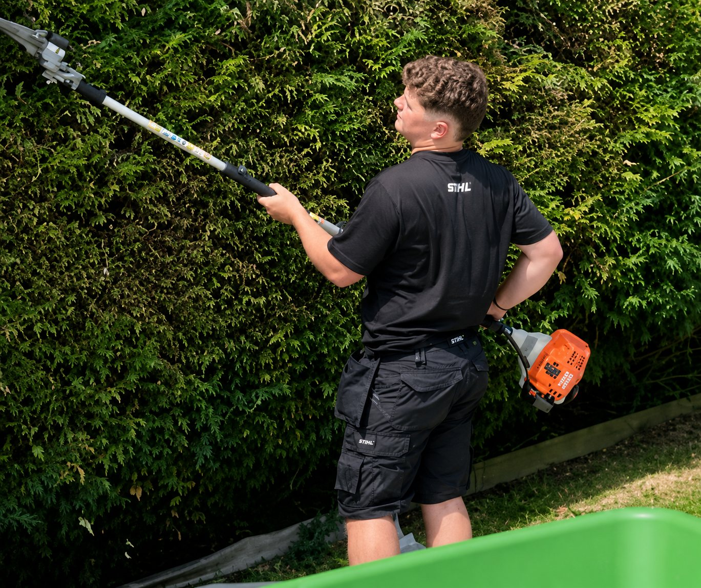

Tonte & bordures
Entretien des pelouses, finitions propres et remise en ordre après intervention.

Étudiant indépendant · Binche & alentours
Le sérieux d'un professionnel, l'énergie d'un étudiant.
Une approche moderne du jardin
Victor accompagne les particuliers pour l'entretien et la valorisation de leurs extérieurs : pelouses, haies, massifs, jardins à remettre en ordre ou entretiens réguliers. Chaque demande fait l'objet d'un devis personnalisé, sans prix affiché à l'avance.
Services
Entretien des pelouses, finitions propres et remise en ordre après intervention.
Taille, égalisation, nettoyage et finitions pour des haies nettes et structurées.
Remise en ordre des zones envahies, accès difficiles ou jardins délaissés.
Entretien des massifs, désherbage, petits aménagements et plantations.
Ramassage, soufflage, nettoyage des abords et évacuation possible des déchets verts.
Passages ponctuels ou suivis selon la saison et les besoins de votre jardin.
Réalisations
Quelques exemples de jardins entretenus, tailles et finitions. La galerie pourra être enrichie au fil des nouveaux chantiers.


À propos
Étudiant en gestion horticole, Victor a créé son activité pour proposer un service sérieux, accessible et soigné aux particuliers de la région. Son objectif : travailler proprement, respecter les engagements et construire une relation de confiance avec chaque client.
Matériel

Un matériel adapté pour l'entretien des pelouses et grands espaces.

Des outils professionnels pour la taille, les finitions et l'entretien.
Zone d'intervention
Interventions à Binche, Épinois, Buvrinnes, Leval, Anderlues, Morlanwelz, La Louvière, Estinnes et alentours selon disponibilité.
Contact
Décrivez votre besoin, ajoutez quelques photos si possible par e-mail ou WhatsApp, et Victor vous recontacte rapidement.